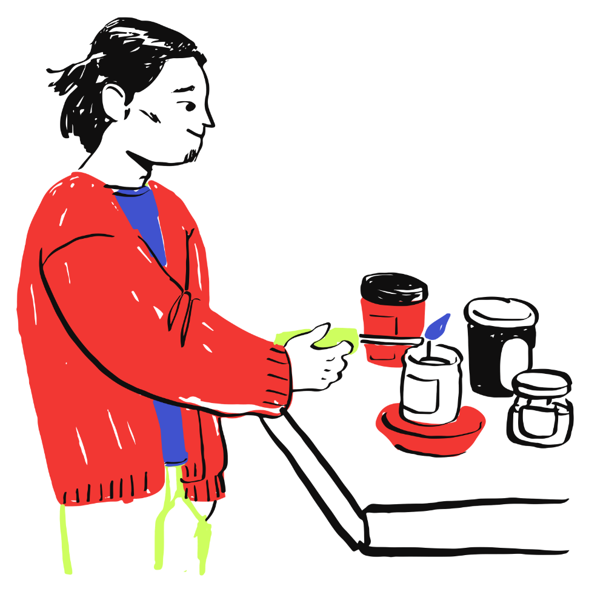
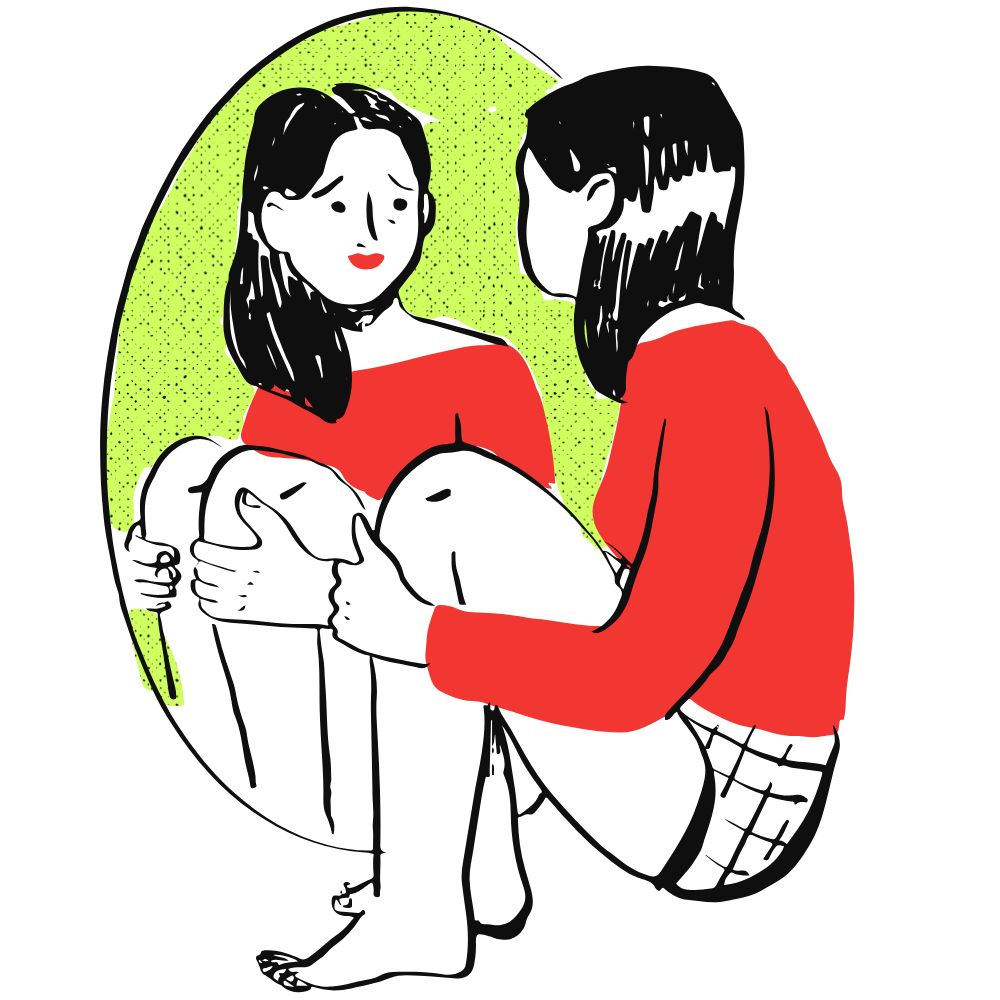
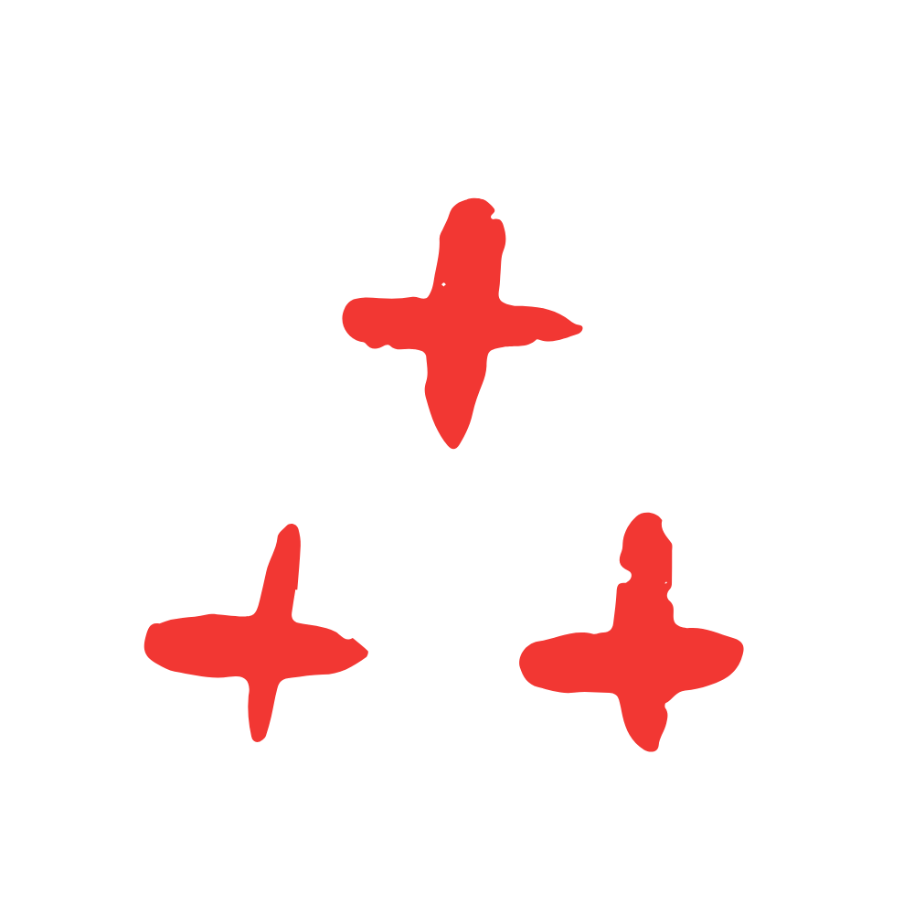
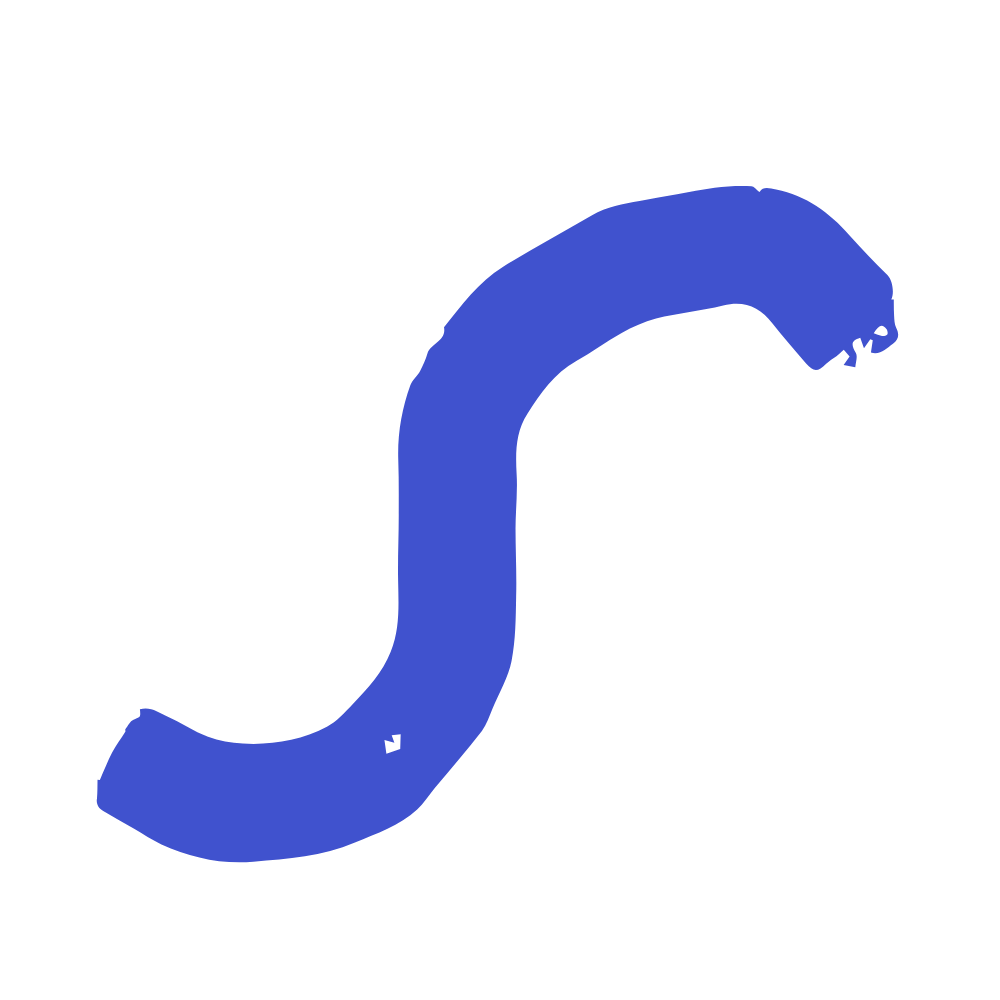
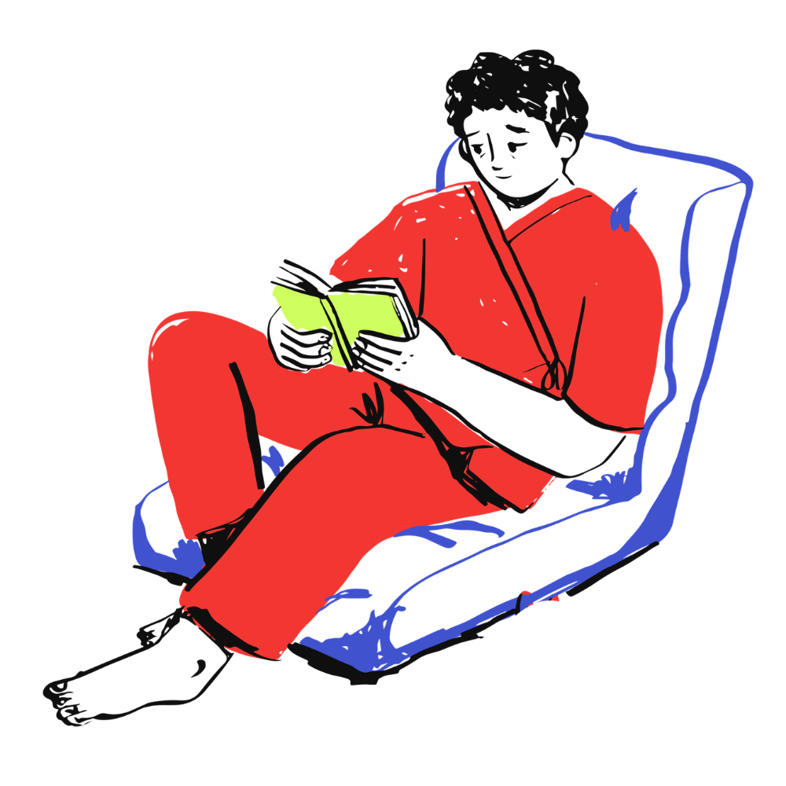

Weekly fifty minute sessions to talk things through with someone who is only there for you.
Read more →A steady, even-handed space for two people who want to understand each other better.
Read more →Guided breathing and mindfulness you can actually keep up with during a busy week.
Read more →How it goes

Say hello
Send a few lines about what's going on.
A first conversation
Twenty free minutes to see how it feels. No commitment.
Find your rhythm
Weekly, bi-weekly, or a handful of sessions when life feels challenging. You set the pace and can pause anytime.
My philosophy
I'm not trying to be in your life forever. I'm trying to make myself unnecessary.
We work on the problem together, and along the way you build the tools to handle it yourself. Most people reach a point where the weekly hour is no longer what they need, and that's the goal. And of course, the door stays open for a tune-up whenever you need it.

HOW THE WORK WORKS
What people bring here


Start with twenty
free minutes.
Pick a time that suits you and we'll talk.
